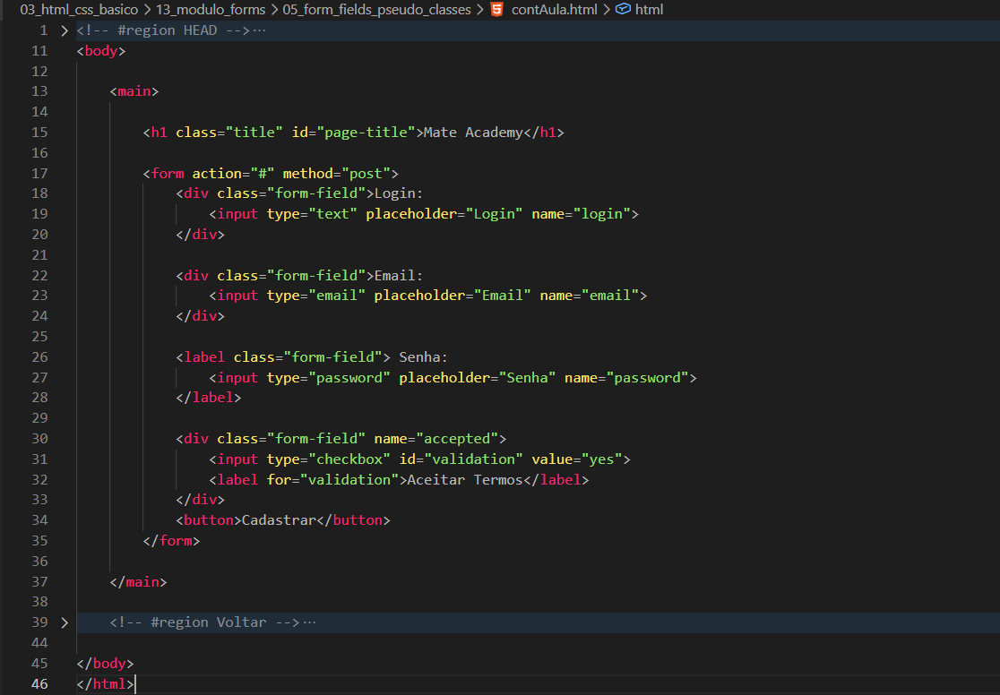
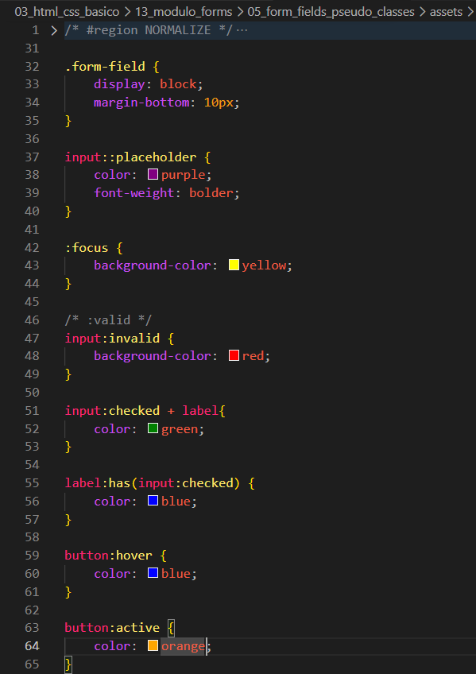

Form Fields Pseudo-Classes
Intro
Aqui iremos ver sobre a estilizacao dos campos com base em seu estado.
Aqui iremos ver sobre a estilizacao dos campos com base em seu estado.
HTML:

CSS:

Podemos observar que ainda temos basicamente a mesma estrutura em nosso HTML, porem agora em nosso CSS houveram bastante mudancas.
Aqui estamos selecionando o pseudo-elemento ::placeholder para alterarmos a aparencia de nosso placeholder.
Com ele podemos modificar por exemplo a cor, fonte ou font-weight do texto.
Aqui estamos selecionando o campo que esta em foco.
Ao clicarmos em algum campo de preenchimento, podemos observar alteracoes visuais nesse campo.
Como no exemplo, ao clicarmos em um campo sua cor sera alterada para yellow.
Quando temos um campo obrigatorio e ele nao e preenchido corretamente, podemos observar alteracoes visuais nesse campo.
Isso pode ser observado por exemplo em campos utilizando o atributo required.
Essa pseudo-classe e utilizada em nosso checkbox.
Com essa alteracao, ao clicarmos em nosso checkbox e marca-lo, a cor de seu texto sera alterada.
Aqui fizemos dessa forma pois nosso label esta encapsulando o input.
Ao clicarmos no checkbox, podemos observar a cor do texto sendo alterada para blue.
Conteudo da aula